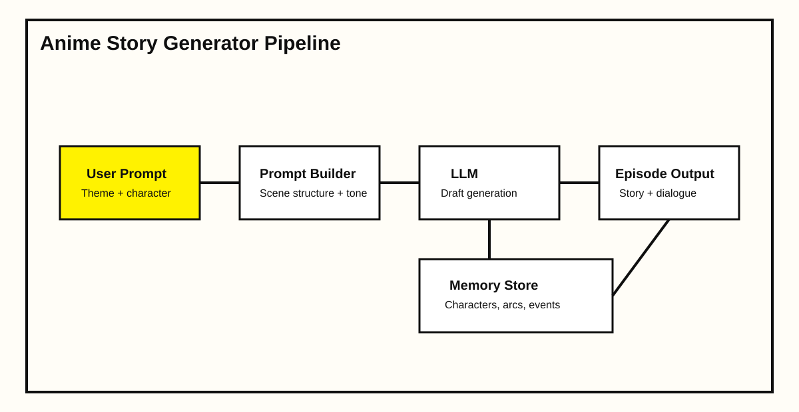

← All case studies
Case study 05 · Generative AI
Anime story AI generator
Built an AI story engine that generates episodic anime narratives with consistent character behavior and scene continuity. The product target was repeat engagement, not one-off prompt output.
+46%7-day retention
−34%Manual regenerations
+39%Session length
Project scope
Designed a multi-step generation flow: world setup, episode outline, dialogue pass, and continuity check. Added session memory so previous events and character traits persist across episodes.
Architecture

Execution notes
Introduced structured prompt templates, style guardrails, and memory scoring to control narrative drift. Output quality checks flagged contradictions before delivery, improving trust in multi-episode generation.